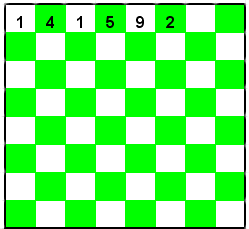

|
|
|
It is well known by all math students thatis an irrational number. This means in simple English that its decimal form, which begins 3.141592�, goes on forever without any repeating blocks of digits.
To celebrate Pi Day this year - March 14, or 3/14 - we propose the following problem.
Beginning with the "decimal" digits (i.e. those that come after the initial 3), write the first 100 digits on a chessboard, one digit at a time in the squares, returning to the first square when necessary. See the diagram for how to begin.
 Now answer these questions:
- In which square of which row of the chessboard will the 100th digit be placed?
- What is that digit?
- What is the sum of the digits that are together in that square?
EXTRA: As this year is 2004, repeat items #1 and #2 for the case of the 2004th digit of
| Comments? Send e-mail. | Back to top | Go back to Home Page | Go back to Contents |